UX Designer
Team: Ida Kilander & Josephine Mörner
A comprehensive UX project where me and my project partner designed a complete website from scratch.
By following a user-centered design process we transformed the firm's lack of digital presence into a professional, high-fidelity web experience.

UX Designer
Team: Ida Kilander & Josephine Mörner
Website Design
Clarity & Trust
Dec
2025
Jan
2026
Feb
2026
This project focused on designing a new website for Ivrell Wallsten AB (IWAB), a startup consulting firm specializing in marketing and sales.
Potential clients often experience uncertainty when searching for consultants. Research indicated that users frequently abandon websites due to unclear service descriptions, lack of pricing transparency, and weak trust signals.
Build a digital presence that addresses common challenges users face when evaluating consulting services online, such as lack of transparency and trust.
A clean website concept with strong visual hierarchy, clear content structure, and a professional overall impression.
A structured research and design process shaped the final direction of the website and helped translate business needs into a clearer digital experience.
We conducted a comprehensive research phase involving 5 semi-structured interviews with small business owners, a literature review, and a competitive analysis of 4 industry players.
Trust is driven by concrete evidence, case studies and measurable outcomes.
Short & simple contact forms reduce friction and convert better, especially with multiple options.
Users need price indications to reduce uncertainty.
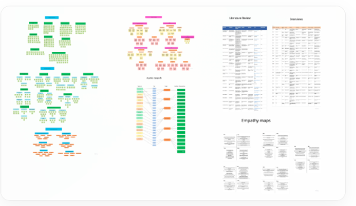
Based on our research, we identified two distinct personas. To ensure a focused and impactful solution, we prioritized our primary persona: Anna Larsson, a 38-year-old SME owner, whose needs guided our core design decisions
Personas were checked against interview patterns / reviewed with participants

"I need clarity and trust before I decide to reach out."
We applied a structured process to translate research insights into concrete design solutions:
Early sketches on the three different website concepts were used to quickly explore layout ideas and user journeys.
The chosen ( the strategic guide) focuses on clarity, credibility, and strategic storytelling. The website presents IWAB’s services in a structured way while highlighting case studies to build trust and guide users toward booking a consultation.

Early conceptual wireframes and layout explorations

Mapping the user journey through content hierarchy
Task flows and user flows were defined to validate navigation logic before creating wireframes.

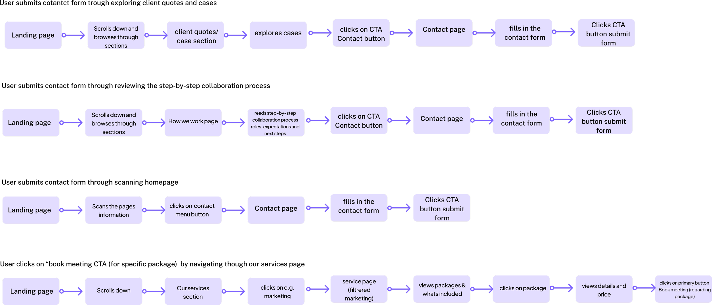
Task flows
Low fidelity wireframes were created to explore layout ideas and organize the websites content structure.

Homepage wireframe
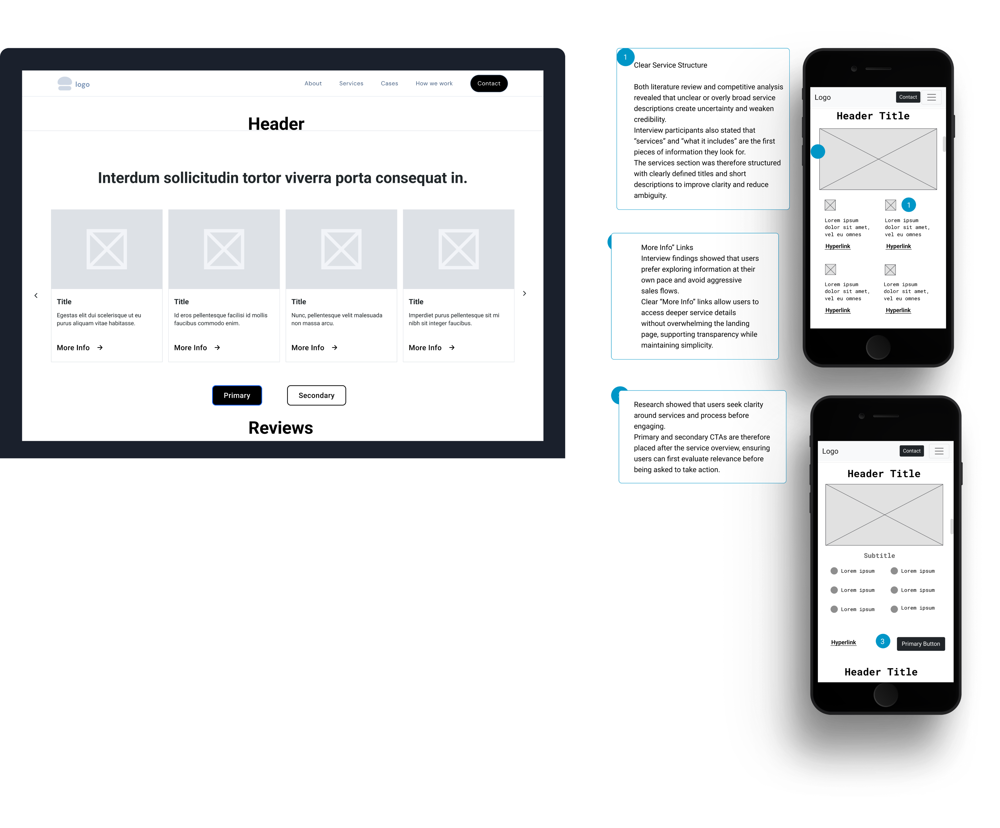
Services page wireframe
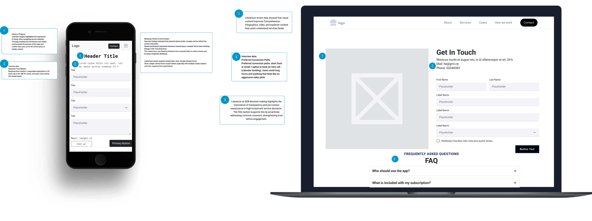
Contact page wireframe
Rapid prototyping: testing core layout and content placement
We conducted early moderated "think-aloud" usability tests with four participants to validate the website’s structure and Information Architecture (IA) before moving to a more detailed design. The primary goal was to ensure that navigation, service offerings, and contact paths were intuitive and logical.
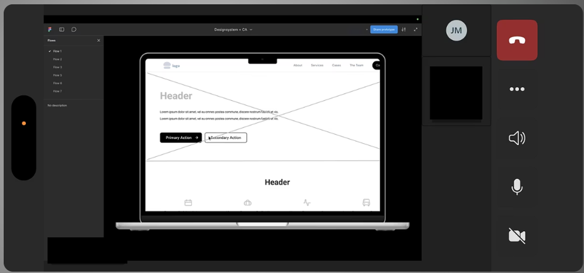
Observing user behavior and identifying friction points
100% success rate with 16 out of 16 tasks completed successfully.
Participants quickly understood IWAB’s offering and easily located "Services" and "Contact". The testing confirmed that the foundational structure functioned as intended without any critical navigation errors.
After the first usability test, mid-fidelity prototypes were created.

Mid fidelity prototype exploring layout structure and interaction flow
We conducted moderated think-aloud usability tests with five target users to validate the interaction logic and content placement in the mobile prototype.
Key sucsesses
The before-and-after case studies were highly effective in building immediate trust with users. Participants quickly understood the value of the services, and service discovery worked well due to clear naming conventions and straightforward descriptions.
Identified frictions
Final validation: ensuring a seamless user journey
Based on the insights from usability testing, several design improvements were implemented:
Conduct a second round of usability testing using a high-fidelity prototype to validate the design changes.
To create a consistent and professional experience, we developed a scalable design system.
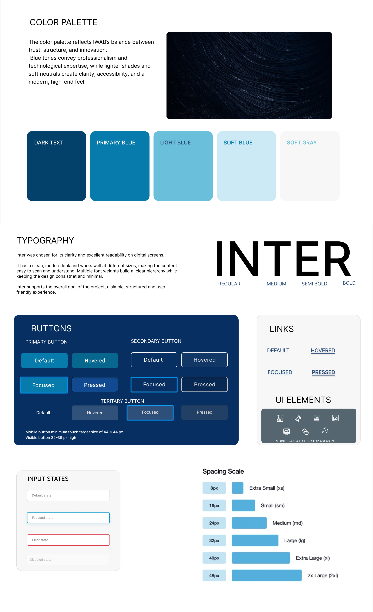
We selected Inter typography for its high readability and a blue-toned palette to convey professionalism and technological expertise.
By building a library of reusable components, we achieved perfect consistency across all screens, from service packages to the contact flow
We ensured high contrast levels, readable typography, and accessible button sizes across all devices to make the platform functional for everyon
All color palettes were meticulously validated via Webaim.com to guarantee they met international accessibility standards
These early high-fidelity wireframes translated our mid-fidelity structure into a more polished visual direction. Each iteration reflects changes made in response to usability findings.
Some of the high-fidelity wireframes
Design iteration 01
Based on usability feedback, we added clearer cues about who IWAB is for — startups and SMEs — to improve relevance and help users identify the offering more quickly.
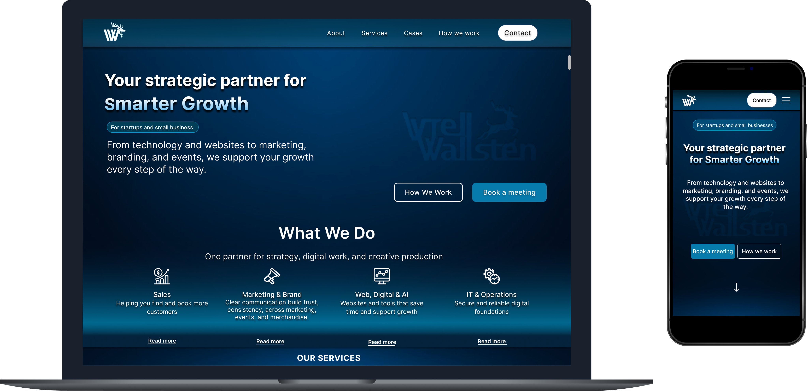
Landing page wireframe showing initial design concepts.
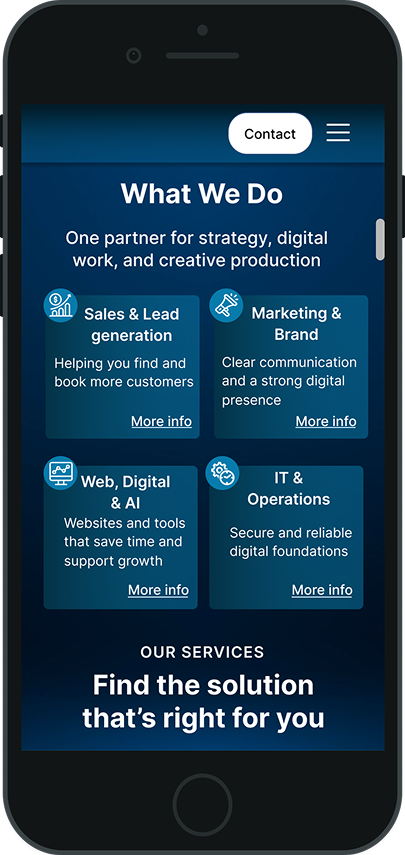
Mobile-only view of the “What we do” section, emphasizing responsive design.
Design iteration 02
User testing showed that the original mobile “Solutions” section created too much vertical scrolling. We redesigned it into a horizontal carousel and brought client cases earlier into the journey to improve engagement.

Desktop view of the “Our Services” section.
Mobile view showcasing the new horizontal carousel for services.
Additional explored screens
Additional high-fidelity explorations focused on testimonials, selected cases, company information, and process transparency to make the website feel more concrete, trustworthy, and easy to understand.
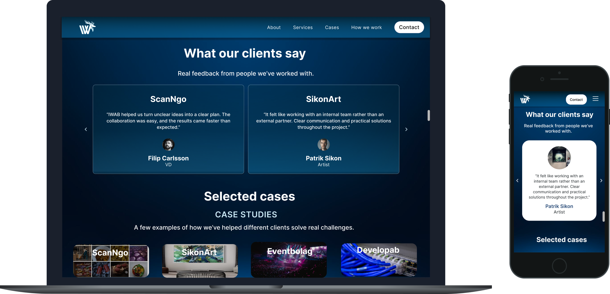
Dedicated to testimonials, this section builds trust by featuring feedback from our clients.

A curated view of our portfolio, highlighting key projects and their successful outcomes.
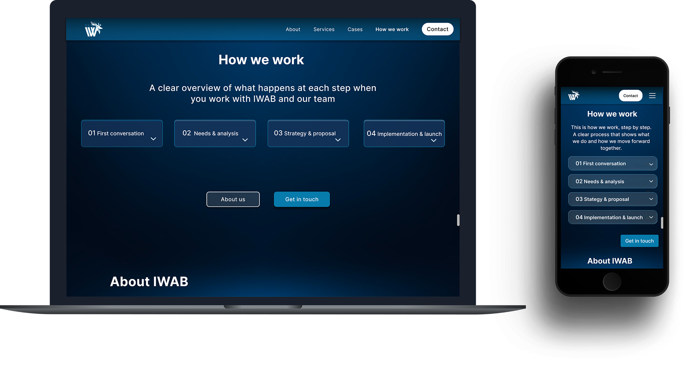
An in-depth look at our methodology and processes, offering transparency into our operations.
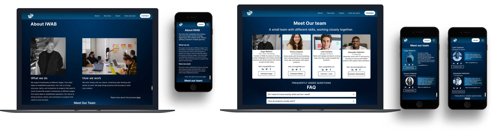
This page introduces our company, mission, and values, providing context for who we are.
Design iteration 03
User testing revealed uncertainty about what happens after submitting the contact form. To improve clarity and reduce hesitation, the contact flow was refined with clearer expectations and better contextual guidance.

The contact flow was refined with clearer expectations after form submission and better CTA continuity.
After completing mid-fidelity iterations, a final round of usability testing was conducted on the high-fidelity prototype. This phase
aimed to validate whether the design improvements successfully addressed core problems and reduced user hesitation before
development.
Unlike earlier tests (focused on structure and information architecture), this round evaluated:
Desktop testing was prioritised because: SME decision-makers typically evaluate consulting services during work hours Desktop provides a realistic professional context Real-life consulting evaluations rarely happen casually on mobile

Final Validation: Confirming a frictionless experience
Ensuring strategic alignment for IWAB’s new digital presence.
To ensure strategic alignment between the new website and IWAB’s brand, positioning, service structure, and long-term vision before launch. This session focused on business alignment, not usability behavior.
// Business Goal
"The new structure perfectly mirrors our consultancy's growth and professional expertise."
(with iterations & validation)
Full Desktop Experience

Responsive Mobile Flow